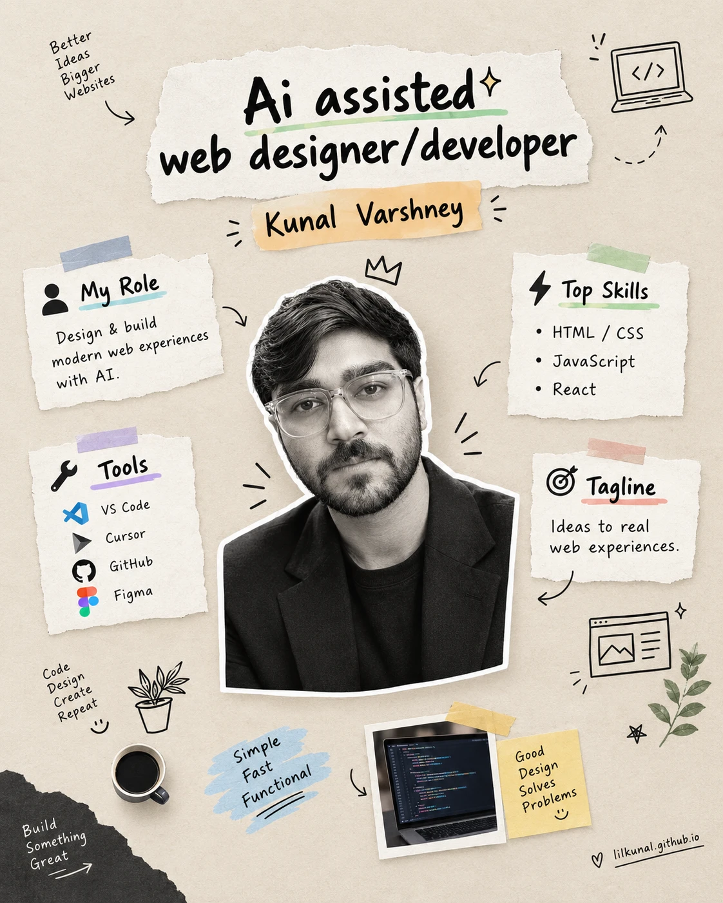

Education
B.Tech in Computer Science
Aligarh College of Engineering & Technology
2020
Professional background
Web Designer · Gurugram · Remote
I once deleted the best thing I had built. A dragon chased a pearl across this page while the text reflowed around it, live, frame by frame. It also pushed 2,217 KB of JavaScript at anyone who opened the page on mobile data. So it is gone. This page ships 7 KB now.
That trade is most of the job. I design and build websites from Gurugram, remote. Since June: 715 commits across 19 repositories — marketing sites for small businesses, an internal ERP that tracks what every customer owes against what they have paid, a 200+ product catalogue selling in eight currencies, and live portfolios three people are using in real job applications right now. Four years in technical support before that, which is where I learned to read a problem fast and say the fix in plain words.

Web design since 2025 · technical support 2021–2024
Independent — Padma Enterprises (Padma Lights) and freelance clients
Teleperformance
Webhelp Pvt. Ltd.
Concentrix Daksh Pvt. Ltd.
Flex Pvt. Ltd.
Parag Dairy · UP Rajya Vidyut Utpadan Nigam Ltd.
Everything I actually use — no buzzword padding
Paper proof — my degree plus online certificates
Education
Aligarh College of Engineering & Technology
2020
Google / Coursera
Coursera
PivotTables, formulas and cleaning raw data — the Excel skills behind every catalogue and pricing sheet I manage.
Coursera
Spreadsheet fundamentals — navigation, formatting and basic formulas — the starting point before the data analysis course above.
Great Learning Academy
Prompting fundamentals — the same instinct I now use to build and maintain this website in collaboration with Claude.
Great Learning Academy
Core logic — variables, loops, conditionals — the foundation under the HTML and CSS I actually work with day to day.
Google Digital Garage
SEO, analytics and online marketing basics — directly behind how I run a manufacturer’s online presence.
Live client work, hire portfolios, and labelled demos
Marketing and catalogue for padmalights.com — 200+ products, export orders. I run the online side.
Personal hire sites for Shweta Tiwari, Antriksh Upadhyay, and Anamika Rajput.
First-person cosmology site — 38 voices, 56 kathas, Hindi / English / Sanskrit. lilkunal.github.io/bhagwan.
Clickable builds for JAI Home Care, Ace Factor Fitness, Atul Shiv Shakti, BKC, and Daftar — labelled as demos on the work page. This portfolio is the design and front-end case.
Internal order desk for the family manufacturing business: proforma invoicing, customer ledgers with per-party outstanding balances, and an order lifecycle where hold and cancel reverse the matching ledger entry.
An independent project to design a high-level, easy-to-use programming language — planning and executing the concepts of compiler design from the ground up.
All of it college-era. The trophy cabinet stopped filling in 2019; the commit history took over.
Web design enquiries · reply within a day · English · Hindi
Portfolio
lilkunal.github.ioPhone
+91 85340 49747GitHub
github.com/lilkunalBusiness
padmalights.com